E-book 최종 분석 보고서 전문 열람 및 다운로드
「쿠팡 배송기사 이탈 예측 및 리텐션 정책 최종 분석 보고서」 전체 전문과 17개 표, 14개 고해상도 그림을 웹에서 직접 열람하거나 PDF 원본으로 다운로드할 수 있습니다.
요약 (Executive Summary)
배송기사 이탈은 소득 수준이 아니라 근무 환경·관리 지원과 연관되며, 관리자 1:1 면담 강화가 비용 대비 효과(ROI +78.8%)가 양(+)인 유일한 정책이다.
배경 및 목적: 인사팀은 ‘소득 인상’을, 현장은 근무시간·휴무·면담 등 근무 환경을 이탈 원인으로 지목했습니다. 본 프로젝트는 이탈 위험 기사를 사전에 식별하고, 비용 대비 효과가 큰 리텐션 정책 우선순위를 도출하는 데 목적이 있습니다.
핵심 결과: 월 소득 차이는 통계적으로 유의하지 않음(p=0.140, d=-0.062). 최종 모델은 Logistic Regression으로 Test ROC-AUC 0.7830, PR-AUC 0.6264, Recall 0.7152를 기록했습니다. 이탈 요인 Top 5는 근속·근무시간·직무만족·휴무일·경로 난이도이며, 고위험 300명 중 위탁 기사 81.3%, 면담 1회 이하가 73.7%에 달했습니다.
1. 서론: 문제 정의와 분석 흐름
1.1 문제 정의
배송기사의 6개월 내 이탈률은 약 27.5%이며 입사 초기 신입의 이탈이 두드러집니다. 인사팀은 “소득을 올리면 해결된다”고 보고, 현장은 근무시간·휴무일·야간 비중 등 근무 여건을 원인으로 꼽았습니다. 본 연구의 과제는 이탈 위험이 높은 기사를 미리 가려내고, 한정된 예산으로 어떤 정책을 먼저 도입할 것인가를 결정하는 것입니다.
1.2 분석 흐름과 재현성
분석은 8단계 파이프라인(EDA → 통계 검정 → 모델 비교 → Permutation·SHAP → 상위 10% 고위험군 → What-if 시뮬레이션 → 비용·효과 분석 → 요약 및 실행 로드맵)으로 엄밀하게 수행되었습니다.
2. 데이터와 분석 방법
분석 데이터는 3,000행 × 17열(식별자 1, 목표변수 1, 수치형 13, 범주형 2: 고용 형태·권역)입니다. 결측치와 중복 ID는 0건이며, 누수 방지를 위해 driver_id를 제외한 15개 특성을 사용했습니다.
Train 2,400명(5-Fold 교차검증)과 Test 600명(이탈률 27.5% 층화 분할)으로 평가 체계를 설계했습니다.
3. 탐색적 데이터 분석 (EDA)
3.1 이탈 분포와 고용 형태
전체 3,000명 중 이탈자는 826명(27.53%), 재직자는 2,174명(72.47%)입니다. 위탁 기사의 이탈률은 31.6%(520/1,644명)로 직고용 기사의 22.6%(306/1,356명)보다 9.0%p 높았습니다.

3.2 근속과 근로 조건
근속 6개월 이하 신입 기사의 이탈률은 36.6%에 달하며, 특히 입사 1~3개월 구간의 조기 이탈 위험이 매우 컸습니다.
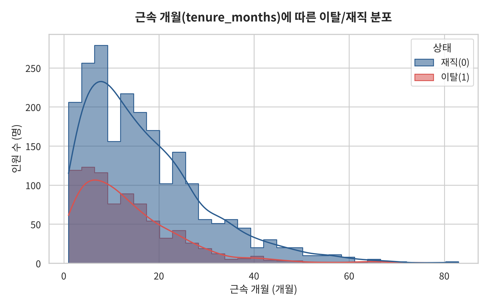
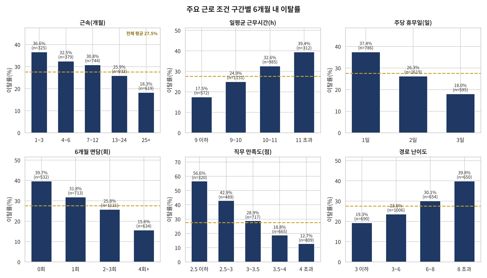
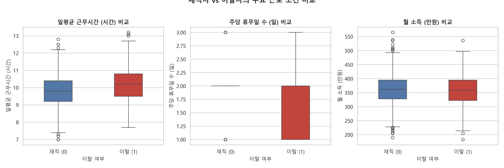
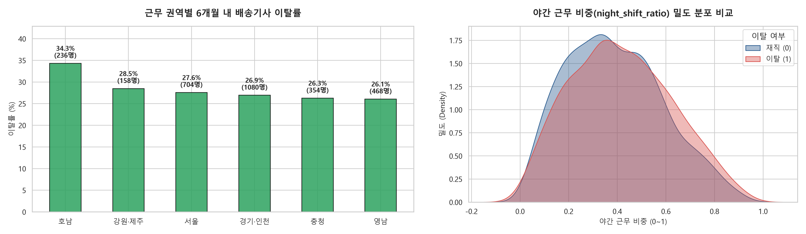
3.3 변수 간 상관
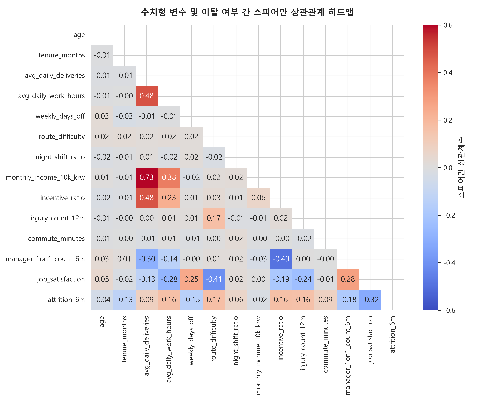
4. 통계적 가설 검증 결과
인사팀의 소득 인상 가설 기각: 재직자(평균 406.3만 원) vs 이탈자(평균 402.7만 원)의 월 소득 차이는 단 0.9%(3.6만 원)로 유의하지 않았습니다 (t = 1.48, p = 0.140, Cohen's d = -0.062).
현장의 근무환경 가설 채택: 근속(d = -0.718, p < 0.001), 일평균 근무시간(d = +0.648, p < 0.001), 직무 만족도(d = -0.589, p < 0.001), 관리자 면담(d = -0.407, p < 0.001)은 모두 강력한 유의차를 보였습니다.
5. 머신러닝 모델 비교 및 Logistic Regression 선정
불균형 데이터 평가에서 Logistic Regression이 Test ROC-AUC 0.7830, PR-AUC 0.6264, Recall 0.7152로 종합 1위를 차지했습니다. 복잡한 랜덤포레스트(PR-AUC 0.6069)나 XGBoost(0.5821)가 선형 모델을 앞서지 못했습니다.
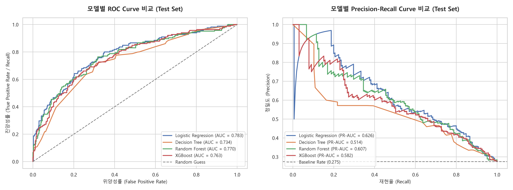
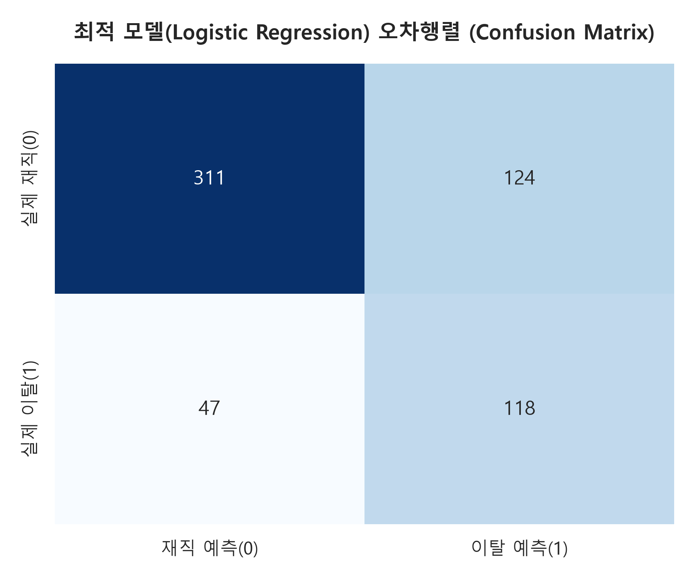
6. 변수 중요도: Permutation Importance와 SHAP
Top 5 핵심 요인: 1위 근속(0.0335), 2위 일평균 근무시간(0.0287), 3위 직무 만족도(0.0236), 4위 주당 휴무일(0.0185), 5위 경로 난이도(0.0175). 월 소득은 11위(0.0063)로 중요도가 낮았습니다.
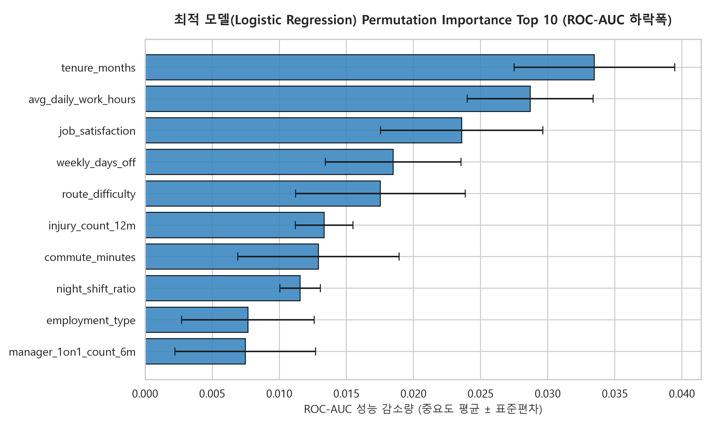
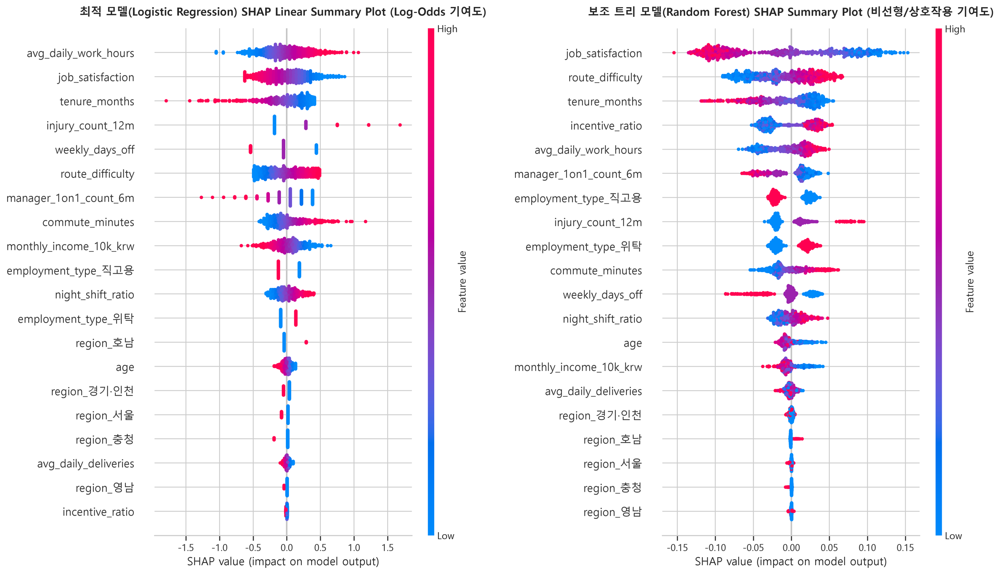
7. 상위 10% 고위험 배송기사 심층 분석
전체 3,000명 중 상위 10%(300명)를 선별했을 때의 탐지 효율은 Lift 2.85배(OOF 2.51배)입니다. 고위험군의 81.3%가 위탁 기사이며, 73.7%가 최근 6개월 면담 1회 이하로 소통이 단절된 집단에 위험이 집중되어 있었습니다.
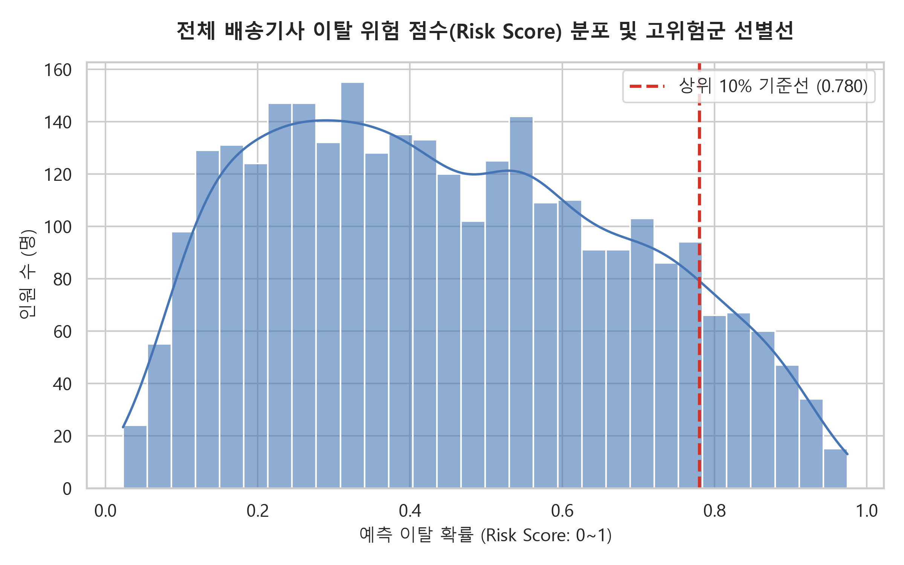
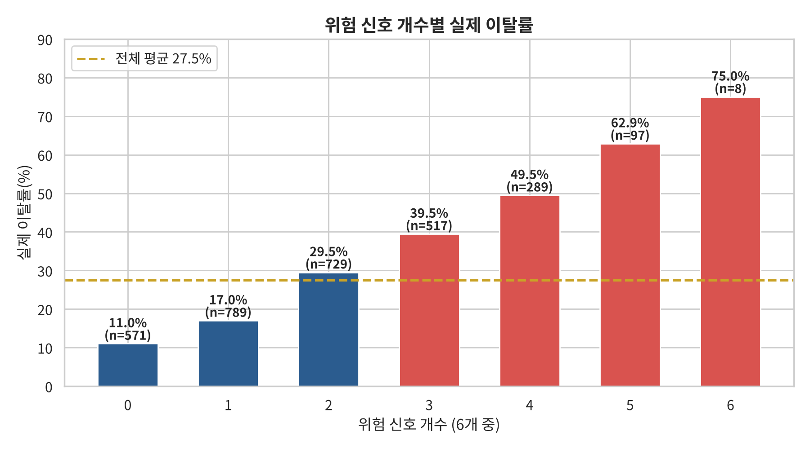
8. What-if 정책 시나리오
정책 적용 시 이탈률 변화: 기준선(44.84%) → 면담 +2회(40.37%, 회피 13.4명) → 근무 -1시간(40.04%, 회피 14.4명) → 휴무 +1일(37.87%, 회피 20.9명) → 복합 정책(24.78%, 회피 60.2명).
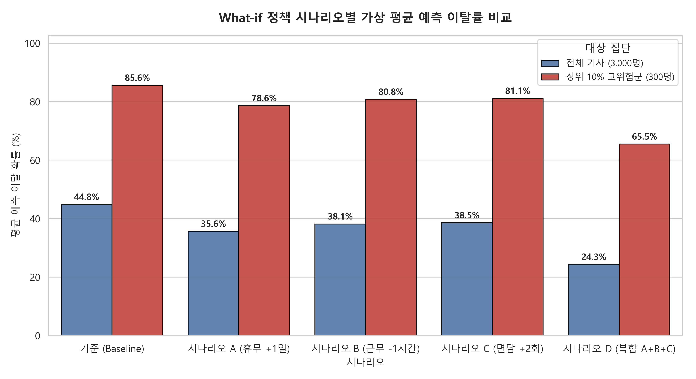
9. 비용·효과 분석 및 추정 ROI
1인당 이탈 대체비용 400만 원 기준, 관리자 면담 +2회 정책(C)은 운영비 3천만 원 대비 순효과 +2,364만 원, 추정 ROI +78.8%로 유일하게 양(+)의 투자 가치를 달성했습니다. 반면 휴무(+1일)는 운영비 6.3억 원 대비 ROI -86.74%, 근무시간 단축은 -84.00%로 적자 폭이 컸습니다.

10. 실제 기업 적용 전략과 로드맵
우선순위 1순위: 관리자 1:1 면담 제도화 (즉시 파일럿 실행, 표준 질문지 도입).
우선순위 2순위: 휴무일 확대 (휴무 1일 이하 집단 선별 시범 후 비용 재설계).
우선순위 3순위: AI 라우팅 최적화를 통한 장시간 근무 및 고난도 경로 분산.
11. 분석의 한계와 향후 개선 과제
본 연구는 횡단면 관찰 데이터이므로 인과관계를 단정할 수 없으며, 비용·절감액은 가정값 기반 추정치입니다. 실제 집행 전 소규모 캠프 A/B 테스트가 필수적이며, 고위험군 점수는 불이익이 아닌 상담/지원 목적에만 한정되어야 합니다.
12. 결론 및 종합 제언
배송기사 이탈은 소득이 아닌 근무 환경과 관리 소통의 문제입니다. 고위험군을 머신러닝으로 사전에 정밀 선별하고, 관리자 1:1 면담을 강화하는 것이 한정된 예산으로 배송망의 안정성을 지키는 가장 비용 효율적인 솔루션입니다.